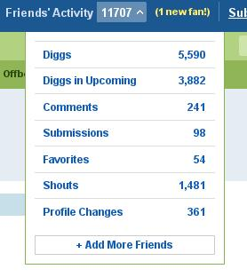

The Friend's activity function in Digg, do we really need it? I mean every time I log in I find 1000's activities. Thats just too much for anybody to chew. Now I have around 500 friends, and I really don't need Digg to monitor all of their activities for me, because you see the end result is garbage. In what way does telling me that there was 241 comments help me? Nothing! 361 profile changes? nothing! How the hell could I monitor all these changes,while keeping my sanity intact?
The function as it is right now is USELESS!
Unless there is a "Favorite Friend" function, where your favorite friends news is reported, not the whole list! This way one can actually monitor friends that s/he actually cares about! The numbers will drastically drop, and make it manageable. Makes sense? I think so.